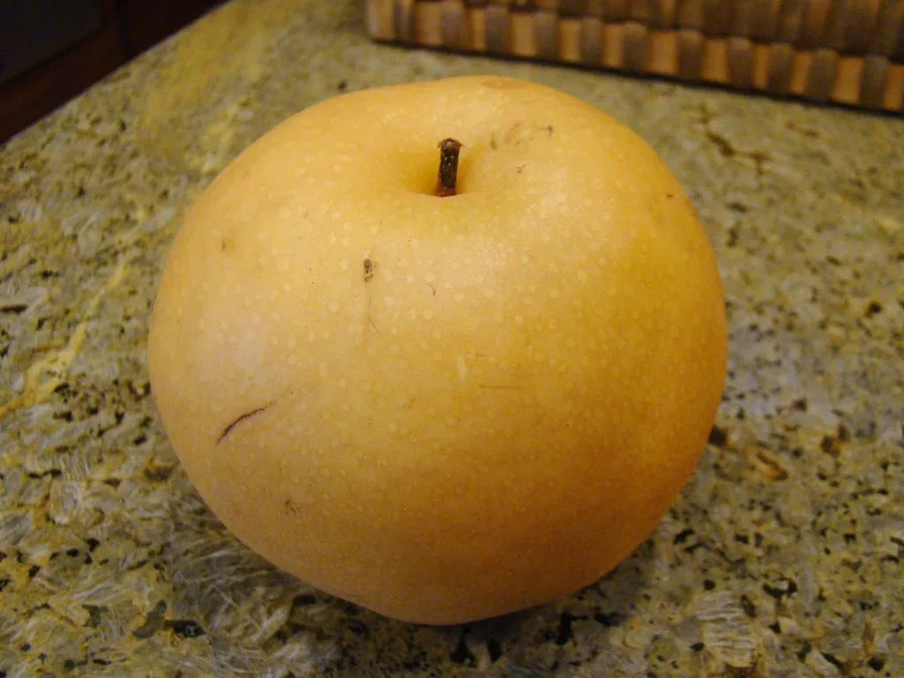
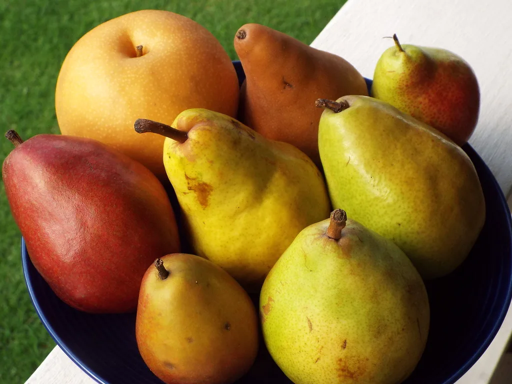

추석 배값 1년 새 20%↑…국가데이터처, 명절 일일물가조사 돌입
국가데이터처가 추석 연휴를 앞두고 이달 10일부터 23일까지 2주간 '추석 명절 일일물가조사'를 진행하고 있다. 매년 명절 때마다 반복되는 장바구니 물가 불안을 선제적으로 파악해 정부의 수급 안정 대책에 실시간으로 반영하겠다는 취지다. 국가데이터처는 이번 조사 결과를 토대로 품목별 가격 동향을 매일 점검하고, 이상 징후가 포착되면 관계 부처에 즉시 통보할 방침이라고 밝혔다. 명절 물가는 짧은 기간 수요가 집중되면서 평소보다 변동폭이 커지는 만큼, 상시 통계보다 촘촘한 일일 단위 점검 체계를 가동한 것으로 풀이된다.
조사 대상은 총 36개 품목으로 구성됐다. 사과·배·밤·쇠고기·달걀·조기 등 농축수산물 24개 품목을 비롯해 밀가루·두부·식용유 등 가공식품 5개 품목, 휘발유·경유·등유 등 석유류 3개 품목, 갈비·치킨 등 외식 품목 4개가 포함됐다. 조사는 서울을 포함한 전국 8개 주요 도시에서 대면 조사와 온라인 조사를 병행하는 방식으로 이뤄지고 있다.

조사 결과 가장 두드러진 품목은 배다. 12일 기준 신고 배 10개의 소매가격은 4만3297원으로, 지난해 같은 시기 3만5903원보다 20.6% 높은 수준을 기록했다. 명절 성수품 중에서도 유독 큰 폭의 가격 상승이 확인되면서, 배는 이번 추석 장바구니 물가에서 소비자들이 가장 부담을 느낄 품목으로 꼽히고 있다.
반면 사과와 무, 달걀 등 다른 주요 성수품은 지난해보다 낮거나 비슷한 수준에서 안정적인 흐름을 보이고 있는 것으로 나타났다. 품목별로 가격 등락 폭이 크게 엇갈리면서, 정부의 물가 대응도 배와 같은 특정 품목에 더 집중될 필요가 있다는 지적이 나온다. 소비자 입장에서는 전체 장바구니 물가가 안정적으로 느껴지더라도, 명절 선물세트 등에서 비중이 큰 배 가격이 유독 높게 형성되면서 체감 물가 부담은 통계 이상으로 크게 다가올 수 있다는 우려도 나온다.

배값이 유독 크게 오른 배경으로는 올여름 이어진 폭염과 그에 따른 작황 부진이 꼽힌다. 앞서 지난달에도 폭염 영향으로 배 가격이 한 달여 만에 20% 가까이 뛴 것으로 조사된 바 있어, 이번 추석 성수기까지 상승세가 이어지는 모양새다. 기후 여건에 따라 특정 과일 가격이 큰 폭으로 출렁이는 현상이 매년 되풀이되고 있다는 점에서, 구조적인 대응이 필요하다는 목소리도 나온다. 산지 농가에서도 폭염과 가뭄이 겹치면서 착과율이 떨어지고 상품성 있는 크기의 배 출하량 자체가 줄었다는 반응이 나오는 것으로 전해졌다.
정부는 이에 앞서 배를 포함한 과일류 성수품 공급량을 평시 대비 세 배 이상으로 늘리고, 국산 농축산물 할인 지원에 역대 최대 규모의 예산을 투입하겠다고 밝힌 바 있다. 국가데이터처의 일일 조사 결과는 이 같은 공급 확대 대책이 실제 소비자 가격 안정으로 이어지는지를 가늠하는 근거 자료로 활용될 전망이다.
일일물가조사는 추석 연휴 마지막 날인 23일까지 계속된다. 남은 기간 배값 오름세가 꺾이지 않을 경우 정부의 할인 지원과 공급 확대 조치가 확대될 가능성도 있어, 향후 발표되는 일일 조사 결과에 관심이 쏠린다. 소비자단체 등에서는 조사 결과가 단순 통계 발표에 그치지 않고, 유통 단계별 가격 격차나 산지 출하 물량 등 원인 분석까지 함께 공개돼야 실질적인 물가 안정 대책으로 이어질 수 있다는 의견도 내놓고 있다.